Analyse Saint-Quay-Portrieux, de l'hémisphère au local
L'essentiel
Grande échelle : lundi 23 : jet au-dessus de la zone (80 nd) ; mardi 24 : jet au-dessus de la zone (81 nd) ; une dorsale passe à 150 km de Saint-Quay, axe à 100 km au nord-ouest de Brest ; dépression la plus proche 991 hPa à 600 km au sud de Reykjavik.
- Lundi 23 : go. Vent de 3 à 11 nd (OSO, O, SSE), rafales jusqu'à 15 nd, Hs jusqu'à 1,0 m. Renverses du courant : 6 h (début du jusant), 12 h 45 (début du flot), 18 h 15 (début du jusant).
- Mardi 24 : prudence. Vent de 17 à 20 nd (SSE, SE), rafales jusqu'à 28 nd, Hs jusqu'à 0,9 m. Renverses du courant : 6 h 30 (début du jusant), 13 h 45 (début du flot), 19 h (début du jusant).
- Mercredi 25 : prudence. Vent de 13 à 18 nd (NE, NNE), rafales jusqu'à 24 nd, Hs jusqu'à 1,7 m. Renverses du courant : 7 h 15 (début du jusant), 14 h 15 (début du flot), 19 h 45 (début du jusant).
| Jour | Feu | Vent moyen (nd) | Rafales (nd) | Hs (m) | Beaufort / Douglas |
|---|---|---|---|---|---|
| lun. 23 | Go | 11 | 15 | 1,0 | 4 / 2 |
| mar. 24 | Prudence | 20 | 28 | 0,9 | 5 / 2 |
| mer. 25 | Prudence | 18 | 24 | 1,7 | 5 / 3 |
| Jour | Feu | Vent moyen (nd) | Rafales (nd) | Hs (m) | Beaufort / Douglas |
1. Hémisphère Nord ≈ 10 000 km
Lundi 23 midi : une dorsale passe à 150 km de Saint-Quay, axe à 100 km au nord-ouest de Brest; au sol, dépressions 991 hPa à 600 km au sud de Reykjavik ; 998 hPa à 400 km au nord-est de Bucarest, soit 500 km au sud de Kiev; anticyclone 1 026 hPa à 50 km au sud-ouest d'Amsterdam.
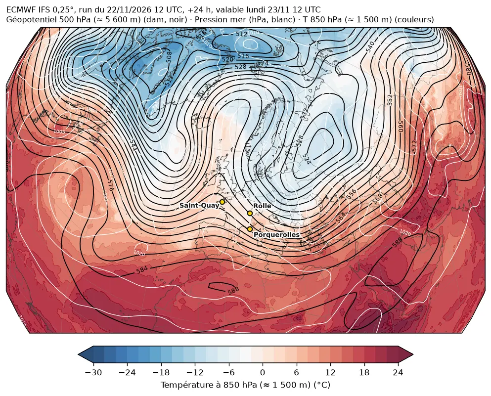
Courants-jets à 250 hPa (≈ 10 400 m)
Lundi 23 midi, 74 nd à 250 hPa (≈ 10 400 m) au-dessus de Saint-Quay : le jet (≥ 80 nd) passe au-dessus de la zone (80 nd à 50 km au sud-ouest de Saint-Malo). Mardi 24 midi, 65 nd à 250 hPa (≈ 10 400 m) au-dessus de Saint-Quay : le jet (≥ 80 nd) passe au-dessus de la zone (81 nd à 50 km au sud de Saint-Malo). Mercredi 25 midi, 28 nd à 250 hPa (≈ 10 400 m) au-dessus de Saint-Quay ; le jet le plus proche (≥ 80 nd) est à 400 km, 80 nd à 300 km au sud-ouest de Brest.
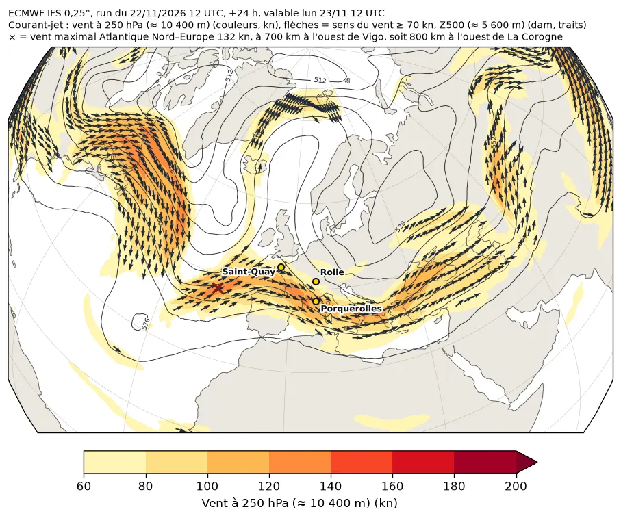
2. Atlantique et Europe ≈ 3 000 km
Cartes officielles du DWD, non modifiées : fronts, anticyclones (H) et dépressions (T) tracés par le service météo allemand.
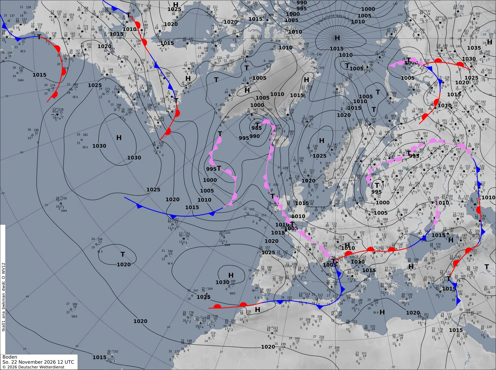
500 hPa et pression mer, mardi 24/11 à 7 h, mardi 24/11 à 19 h, mercredi 25/11 à 7 h, mercredi 25/11 à 19 h (heure suisse)
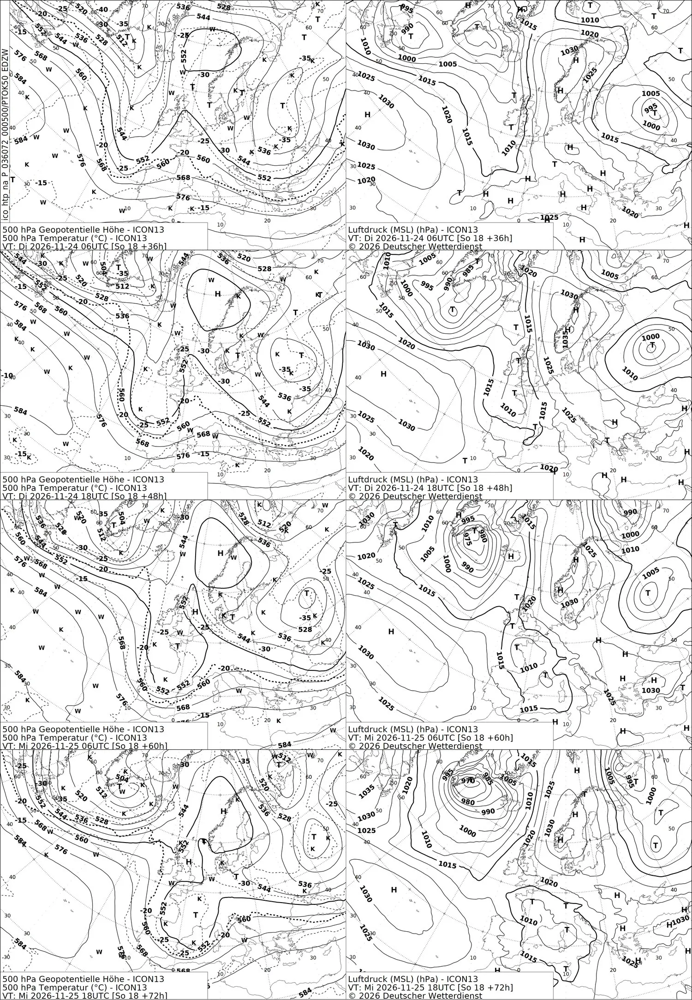
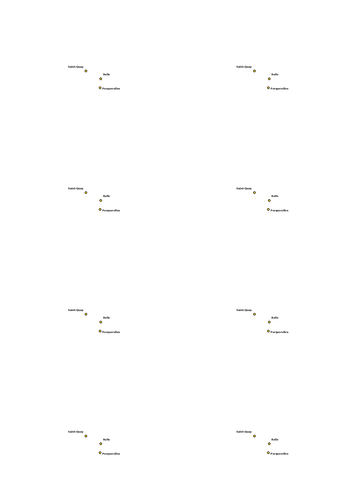
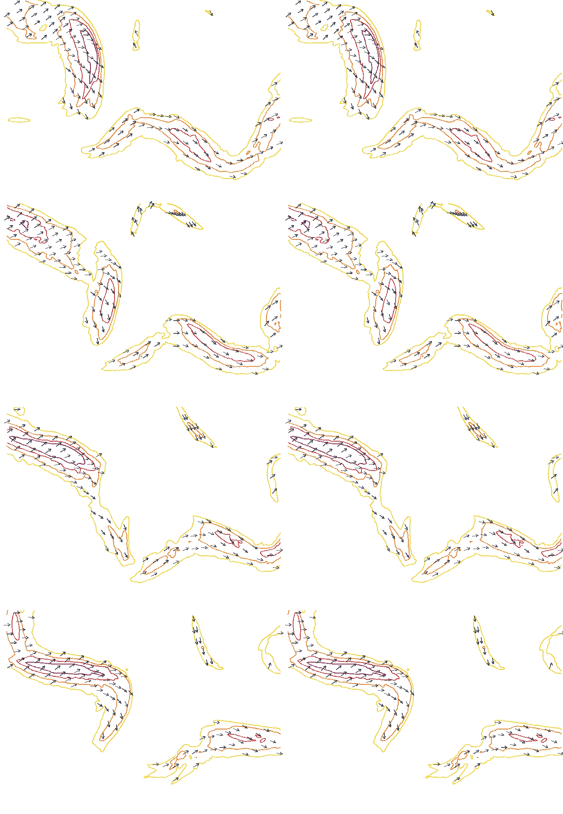
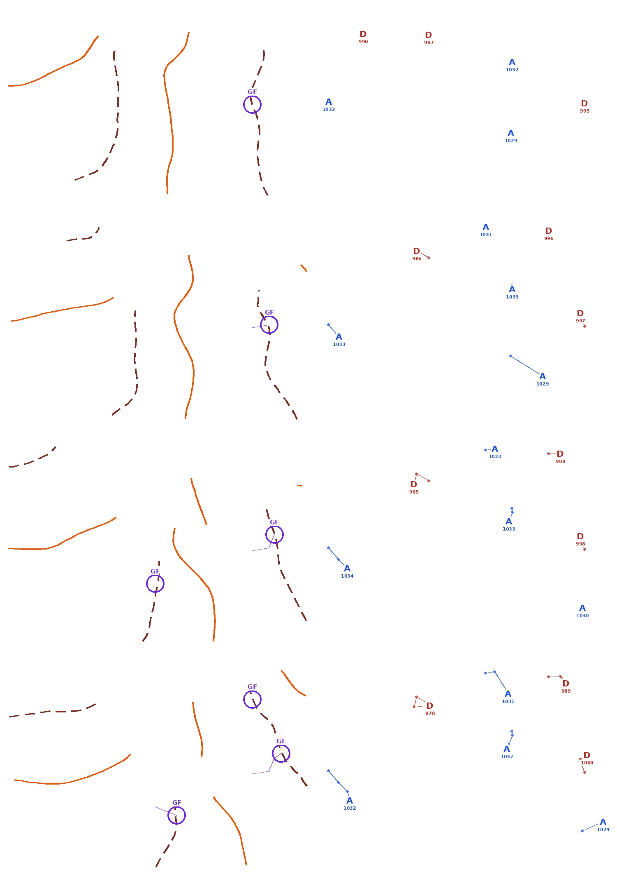
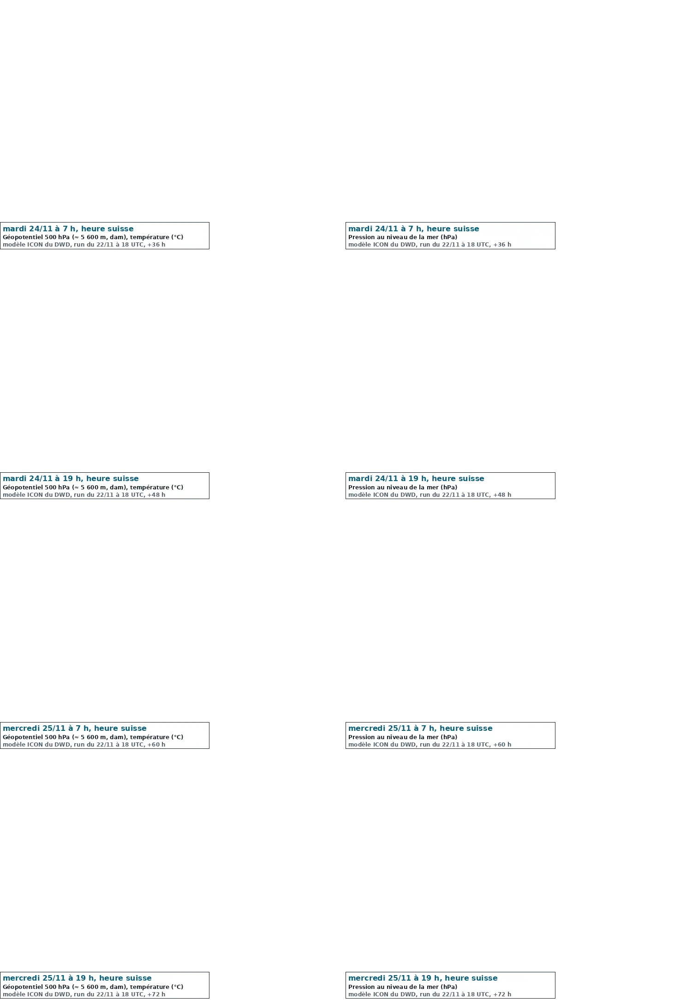
3. Manche et golfe de Gascogne ≈ 1 000 km
Lundi 23/11 16 h : au-dessus de Saint-Quay, vent de sud 4 nd, pression 1 022 hPa ; sur le cadre, 38 % de la surface en eau au-dessus de 18 nd, 0 % au-dessus de 25 nd ; le plus fort 26 nd à 350 km au nord-ouest de La Corogne. Mardi 24/11 16 h : au-dessus de Saint-Quay, vent de sud-est 19 nd, pression 1 009 hPa ; sur le cadre, 43 % de la surface en eau au-dessus de 18 nd, 13 % au-dessus de 25 nd ; le plus fort 30 nd à 200 km au nord-ouest de Bilbao ; dépression 1 005 hPa à 100 km au nord-ouest de Brest. Mercredi 25/11 16 h : au-dessus de Saint-Quay, vent d'est-nord-est 10 nd, pression 1 009 hPa ; sur le cadre, 41 % de la surface en eau au-dessus de 18 nd, 11 % au-dessus de 25 nd ; le plus fort 36 nd à 200 km au nord de Bilbao ; dépression 1 006 hPa à 200 km au sud-ouest de Nantes, dépression 1 007 hPa à 150 km au sud de Paris. Avec annotations : trait orange 18 nd, rouge 25 nd, violet pointillé rafales 35 nd.
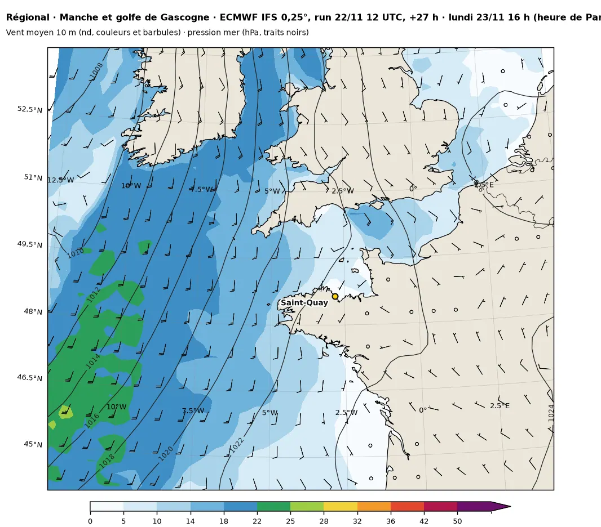
4. Baie de Saint-Brieuc ≈ 70 km
Lundi 23/11 16 h : vent de 1 à 7 nd, rafales jusqu'à 13 nd (le plus fort à 35 km au nord du cap Fréhel), Hs de 0,3 à 1,7 m (la plus forte à 20 km au nord-ouest de Bréhat). Mardi 24/11 16 h : vent de 12 à 22 nd, rafales jusqu'à 31 nd (le plus fort à 15 km au nord de Bréhat), Hs de 0,4 à 2,1 m (la plus forte à 15 km au nord de Bréhat). Mercredi 25/11 16 h : vent de 11 à 21 nd, rafales jusqu'à 28 nd (le plus fort à 30 km au nord du Grand Léjon), Hs de 1,0 à 2,4 m (la plus forte à 20 km au nord-ouest de Bréhat).
Les modèles ne sont pas d'accord
mercredi 25/11 16 h : ECMWF donne 10 nd du ENE sur la zone, ICON-EU 18 nd du NE au point de référence. À revoir au prochain run et avec le bulletin en cours.
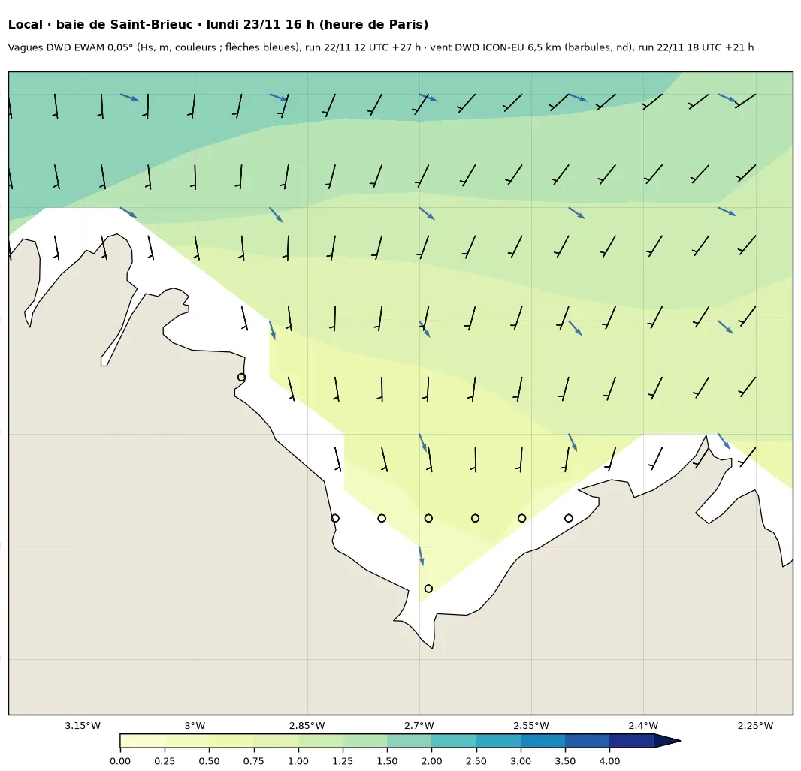
5. Courants ≈ 70 km
Au point « Point GPS de test », le flot porte au sud-sud-est (149°), le jusant au nord-nord-ouest (329°). Renverses de jour : lundi 23/11 6 h (début du jusant), lundi 23/11 12 h 45 (début du flot), lundi 23/11 18 h 15 (début du jusant), mardi 24/11 6 h 30 (début du jusant), mardi 24/11 13 h 45 (début du flot), mardi 24/11 19 h (début du jusant), mercredi 25/11 7 h 15 (début du jusant), mercredi 25/11 14 h 15 (début du flot), mercredi 25/11 19 h 45 (début du jusant).
| Moment (Paris) | Phase | Courant au point (nd, vers) | Vent ICON-EU (nd, du) | Effet |
|---|---|---|---|---|
| lundi 23/11 15 h | flot | 1,7 · SSE (151°) | 3 · SO | courant de travers au vent |
| lundi 23/11 20 h 45 | jusant | 1,4 · NO (326°) | 11 · SSE | vent et courant dans le même sens |
| mardi 24/11 9 h 45 | jusant | 1,6 · NO (326°) | 20 · SE | vent et courant dans le même sens |
| mardi 24/11 16 h | flot | 1,8 · SSE (151°) | 17 · SE | vent contre courant |
| mercredi 25/11 10 h 30 | jusant | 1,5 · NO (326°) | 12 · NNE | courant de travers au vent |
| mercredi 25/11 16 h 45 | flot | 1,9 · SSE (151°) | 19 · NE | courant de travers au vent |
| Moment (Paris) | Phase | Courant au point (nd, vers) | Vent ICON-EU (nd, du) | Effet |
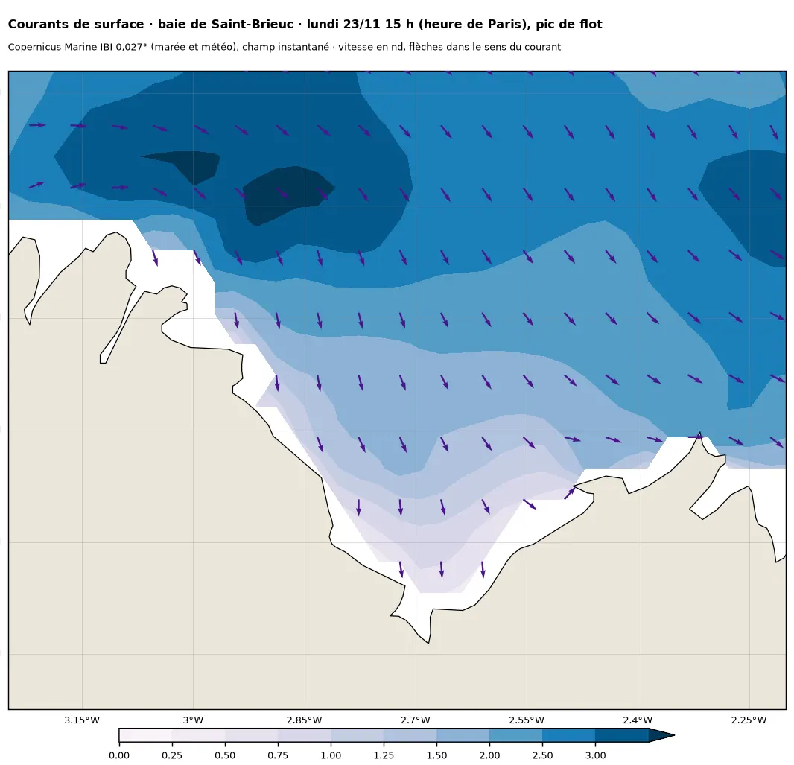
6. Vent, vagues et courants ensemble, toutes les 3 h ≈ 70 km
Une carte toutes les 3 heures de jour, plus une à chaque renverse de courant ; les changements de vent importants (8 nd ou plus, ou 45° ou plus) sont signalés. Le fond est seul au départ : ajoutez les couches une à une.
| Heure (Paris) | Vent ICON-EU (nd, du) | Vagues EWAM (Hs m, de) | Courant IBI (nd, vers) | Ce que ça donne |
|---|---|---|---|---|
| lundi 23/11 6 h renverse, début du jusant | 11 · O, raf. 17 | 1,1 · NNO | 0,2 · ONO | courant faible ; houle croisée avec le vent |
| lundi 23/11 7 h | 10 · OSO, raf. 15 | 1,0 · NNO | 0,8 · NO | courant de travers au vent : dérive à corriger ; houle croisée avec le vent |
| lundi 23/11 10 h | 11 · O, raf. 15 | 0,9 · NNO | 1,3 · NO | courant de travers au vent : dérive à corriger ; houle croisée avec le vent |
| lundi 23/11 13 h renverse, début du flot | 6 · OSO, raf. 10 | 0,7 · NNO | 0,3 · S | courant faible ; houle croisée avec le vent |
| lundi 23/11 16 h | 3 · SSE, raf. 5 | 0,6 · NNO | 1,4 · SSE | vent contre courant : peu d'effet, vent faible ; houle croisée avec le vent |
| lundi 23/11 18 h renverse, début du jusant | 7 · SE, raf. 10 | 0,6 · NNO | 0,2 · OSO | courant faible ; houle croisée avec le vent |
| lundi 23/11 19 h | 9 · SSE, raf. 12 | 0,5 · NNO | 0,7 · NO | vent et courant dans le même sens : mer plus longue ; houle croisée avec le vent |
| mardi 24/11 7 h renverse, début du jusant | 18 · SSE, raf. 24 | 0,7 · SE | 0,6 · NO | vent et courant dans le même sens : mer plus longue ; vent au-delà du seuil orange au près |
| mardi 24/11 10 h | 20 · SE, raf. 28 | 0,8 · SE | 1,5 · NO | vent et courant dans le même sens : mer plus longue ; courant fort (1,5 nd) ; vent au-delà du seuil orange au près |
| mardi 24/11 13 h | 20 · SE, raf. 27 | 0,9 · SE | 0,6 · NO | vent et courant dans le même sens : mer plus longue ; vent au-delà du seuil orange au près |
| mardi 24/11 14 h renverse, début du flot | 20 · SE, raf. 27 | 0,9 · ESE | 0,5 · SSE | vent contre courant : mer hachée et creuse, prudence ; vent au-delà du seuil orange au près |
| mardi 24/11 16 h | 17 · SE, raf. 24 | 0,9 · ESE | 1,8 · SSE | vent contre courant : mer hachée et creuse, prudence ; courant fort (1,8 nd) |
| mardi 24/11 19 h renverse, début du jusant | 16 · SE, raf. 23 | 0,9 · E | 0,4 · O | courant faible |
| mercredi 25/11 7 h renverse, début du jusant | 15 · NE, raf. 20 | 0,9 · NNE | 0,3 · SSO | courant faible |
| mercredi 25/11 10 h | 13 · NNE, raf. 18 | 1,0 · NNE | 1,5 · NO | courant de travers au vent : dérive à corriger ; courant fort (1,5 nd) |
| mercredi 25/11 13 h | 14 · NNE, raf. 19 | 1,4 · NE | 1,0 · NO | courant de travers au vent : dérive à corriger |
| mercredi 25/11 14 h renverse, début du flot | 14 · NNE, raf. 19 | 1,5 · NE | 0,3 · O | courant faible |
| mercredi 25/11 16 h | 18 · NE, raf. 24 | 1,7 · NE | 1,8 · SSE | courant de travers au vent : dérive à corriger ; courant fort (1,8 nd) ; vent au-delà du seuil orange au près |
| mercredi 25/11 19 h | 18 · NE, raf. 26 | 1,6 · NNE | 0,6 · S | vent et courant dans le même sens : mer plus longue ; vent au-delà du seuil orange au près |
| mercredi 25/11 20 h renverse, début du jusant | 18 · NE, raf. 24 | n.d. | 0,5 · ONO | courant de travers au vent : dérive à corriger ; vent au-delà du seuil orange au près |

Goutte froide
Goutte froide confirmée à 500 hPa (≈ 5 600 m) à 200 km au nord-est de Bordeaux, à 413 km de Saint-Quay, mercredi 25/11 13 h : cœur -27,7 °C contre -22,4 °C autour, géopotentiel 545 dam. Déplacement : 25,0 nd. Niveau d'alerte 0 sur 3.
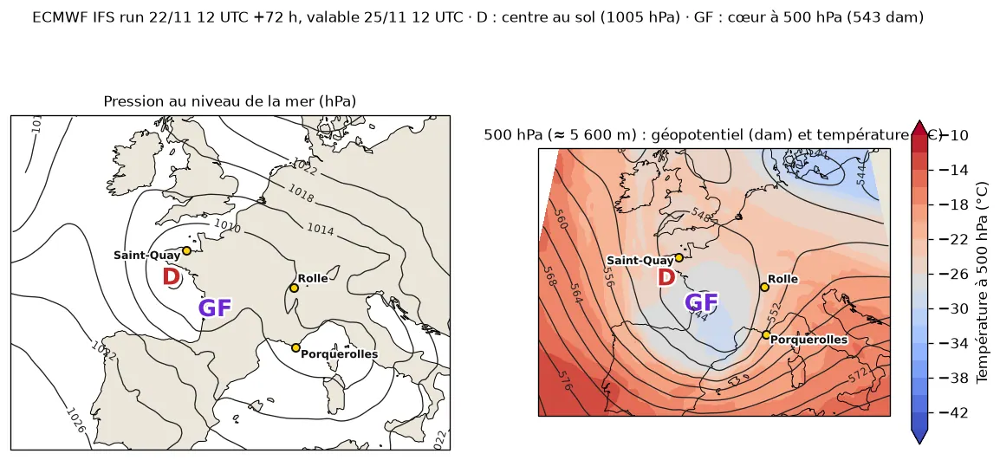
Ce qui manque et sources
- Heures et hauteurs de marée officielles : annuaire des marées du SHOM.
- Bulletin côtier et BMS en cours : ils ne sont pas lus par ce générateur, consultez-les sur Météo-France marine.
- Vagues EWAM : au-delà de +78 h pour mercredi 25/11 20 h.